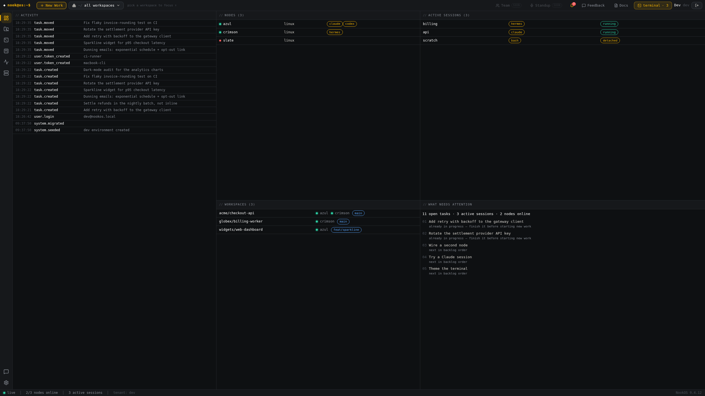
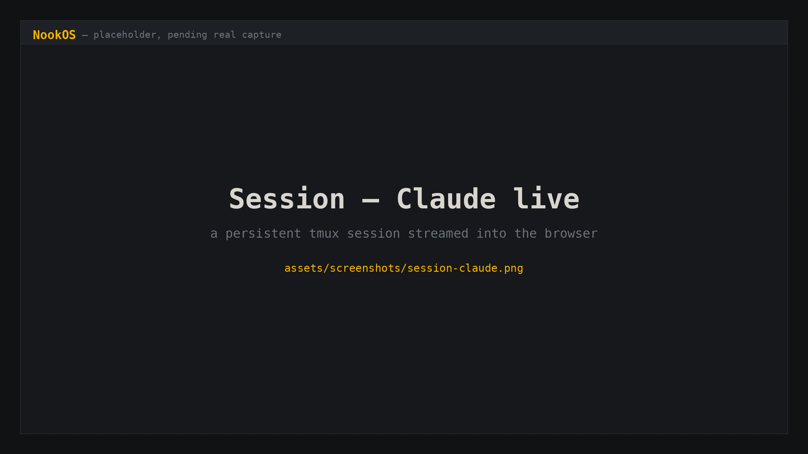
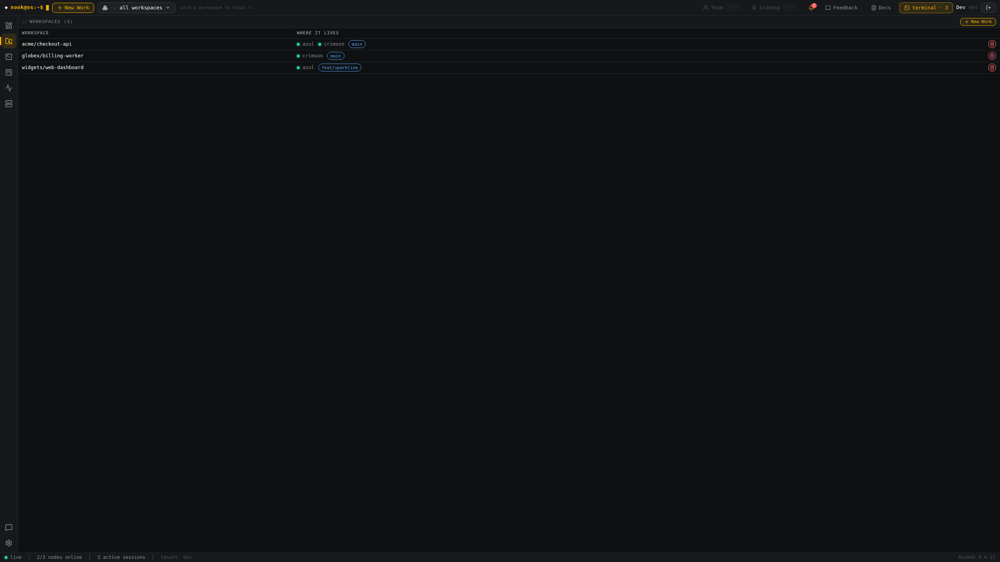
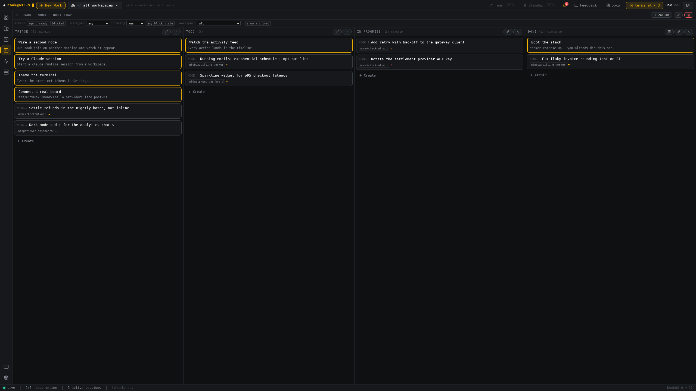
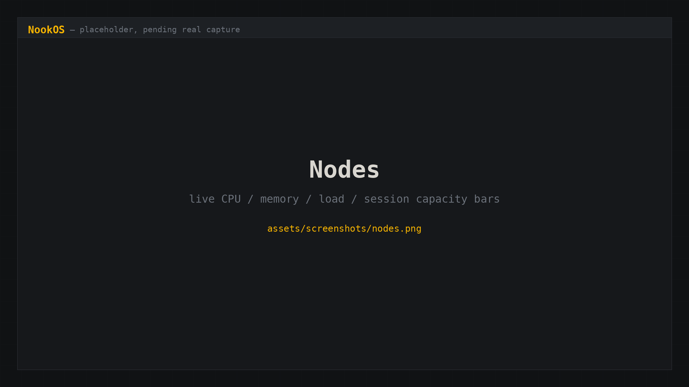
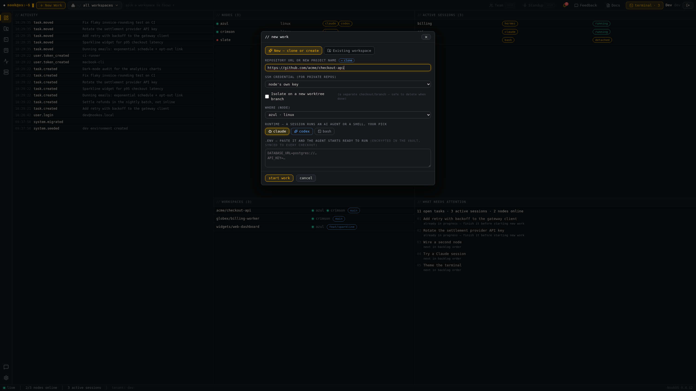
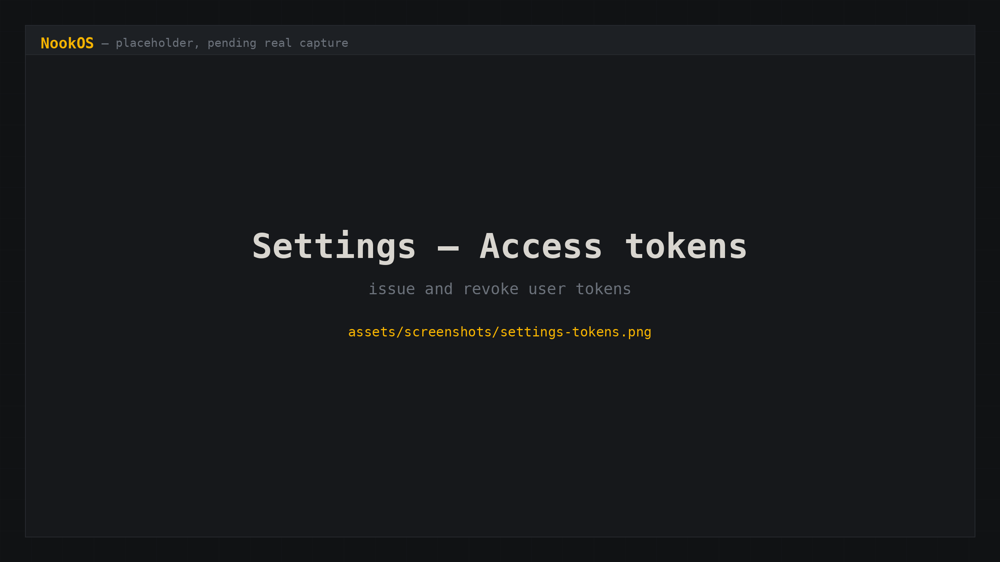

Nodes
Machines join with a token and connect outbound over WebSocket — no inbound SSH, no public ports. Each reports CPU, memory, load, session capacity and installed runtimes, live.
That starts Claude Code on a different computer.
nook exec types at it and waits for the answer. No ssh, no tmux,
no hostname, no port to forward. Close your laptop and it keeps working.
$ curl -fsSL https://nookos.dev/install.sh | sh
Asks a few questions, then sets it up. Nothing to clone, nothing to build. Read the script before you pipe it to a shell — it is 200 lines and you should.
Signed and notarised by Apple, so it opens like any other Mac app. Windows still shows a SmartScreen prompt until its certificate lands. The same UI runs in any browser at your control plane's address.
Try it
Simulated, in your browser — but the commands are the real ones. The boot readout is what nook prints when it comes up.
# azul is a box across the room. or across the world. same command. $ nook start acme/checkout-api --node azul --runtime claude --name api ✓ api — claude on azul nook exec api 'your prompt' nook read api $ nook exec api 'what machine are you on, and what is this repo?' ❯ what machine are you on, and what is this repo? ● I'm on azul (linux), in /srv/work/acme/checkout-api — the payment capture and settlement service. Want me to run the tests? claude · running
Try ↑ for history · tab to complete
Not a mockup
An agent running on one machine started a Claude Code session on a second
machine, sent it prompts, read its answers, and drove the work to
completion — using nothing but nook start,
nook send, nook read and nook exec.
No ssh session was opened. No port was forwarded. No hostname was typed.
NookOS ships that capability as an agent skill, so any agent you run can
do the same thing: ./skills/install.sh --host <box>.
The protocol is small enough to explain in one line — send types,
read looks, exec does both and waits — which is exactly why an agent
can pick it up without a wrapper library.
How it works
You name a workspace and a runtime. The control plane finds a machine that has that repo checked out and starts the session there. You never address the machine directly.
Machines, repos and running sessions, kubectl-style. Every node reports its own capabilities, including which runtimes it actually has installed.
$ nook get nodes NAME PLATFORM STATUS RUNTIMES azul linux online claude,codex,bash crimson linux online hermes,bash $ nook get workspaces $ nook get sessions
Pick the runtime you want — claude, codex, hermes, bash, zsh. Drop --node and the scheduler picks an online machine that has the repo.
$ nook start acme/checkout-api --runtime claude $ nook start acme/checkout-api --node azul --runtime claude --name refactor-auth
exec polls until the screen stops changing for two consecutive reads — the only honest way to know an agent has finished, because thinking time is unpredictable and a fixed sleep either truncates the answer or wastes minutes.
$ nook exec refactor-auth 'move the token refresh into middleware' --timeout 600 $ nook send refactor-auth 'yes' # answer a permission prompt $ nook read refactor-auth --lines 400
Sessions are independent and persistent. Start work on three repos across three machines, go and do something else, and collect the results when you get back.
$ nook start acme/checkout-api --node azul --runtime claude --name api $ nook start widgets/web-dashboard --node crimson --runtime claude --name web $ nook send api 'upgrade sqlx and fix the fallout' $ nook send web 'migrate settings to the new form component'
What it is
NookOS does not replace your editor, your Git, or your AI. It coordinates everything around them, and it keeps the coordination in one place you own. Claude writes the code. Nook decides where it runs, remembers that it ran, and is still holding the session when you come back — an operating system for the work rather than for the machine.
Machines join with a token and connect outbound over WebSocket — no inbound SSH, no public ports. Each reports CPU, memory, load, session capacity and installed runtimes, live.
A workspace is a repo, not a machine. The same workspace can exist on many nodes; a repository's identity is its git remote, so two checkouts of the same thing are the same thing.
tmux-backed and persistent, streamed to xterm.js in the browser. They survive page refreshes, network drops, your process exiting and the node restarting.
A session runs whatever you choose — bash, zsh, claude, hermes, codex. Ask a node for a runtime it doesn't have and it fails immediately, not mysteriously.
Kanban that actually dispatches work. Triage → Todo → In Progress → Done, where start work creates a worktree and a session, and prune tears the worktree back down.
Everything produces an event, streamed live over WebSocket. Plus rolling per-workspace notes, so the context of a piece of work lives next to the work.
An MCP server at /mcp exposes the whole system to any MCP client: list workspaces, nodes and sessions, start a session, send to it, read activity, create a task.
Generic OIDC against any standards-compliant IdP, authorization code + PKCE, multi-tenant from the schema up. Access tokens are issued and revoked in the UI.
A Tauri shell wraps the same application, so the fleet is a native window when you want one and a browser tab when you don't.
The application
One screen for every machine, every repo and every running session you own.







Install
Asks how you want to run it, generates its own secrets, and starts it. Docker Compose, Compose behind Traefik, plain docker run, or systemd.
$ curl -fsSL https://nookos.dev/install.sh | sh
Prefer to read it first? curl -fsSL https://nookos.dev/install.sh -o install.sh, then run it. It verifies the binary against a published SHA-256 either way.
In the UI: Nodes → add node. It hands you this, with the token and the certificate fingerprint already filled in. The machine generates its own keypair, sends only a signing request, and connects outbound — nothing needs to be reachable from the internet.
$ curl -fsSL https://your-nook/install.sh | sh -s -- --token nook_join_...
The same UI in a native window instead of a browser tab — it is the identical build, wrapped in a window. It talks to your control plane like any other client, so there is nothing extra to install on the server and you can skip it entirely.
Download links are at the top of this page, and
every file sits on the
latest release
beside the nook CLI binaries and their checksums.
macOS builds are signed with a Developer ID certificate and notarised by Apple, so Gatekeeper accepts them without a right-click. The notarisation ticket is stapled to the bundle, which means it also works on a machine that is offline.
Windows is not signed yet — SmartScreen will want More info → Run anyway until a certificate is in place.
NookOS ships as an agent skill. Installs into every agent it finds on the machine — Hermes (and each of its profiles), Claude Code — so they can start and drive sessions across the fleet themselves.
$ nook skills install
Deploy
Images are published to ghcr.io/nook-os/ and are public. Everything below is what the installer would have generated.
NookOS does not install or manage Postgres on your host. The two Compose modes run it as a container alongside everything else; the other two expect one you already operate.
| Mode | Postgres |
|---|---|
| Docker Compose | Included — runs as a service, with a generated password |
| Compose behind Traefik | Included — same |
docker run | Bring your own — you supply DATABASE_URL |
| systemd + native binary | Bring your own — you supply DATABASE_URL |
For a bring-your-own mode the whole prerequisite is a role and a database. The schema needs no action — migrations run at startup.
CREATE ROLE nook LOGIN PASSWORD 'choose-something'; CREATE DATABASE nook OWNER nook;
services:
postgres:
image: postgres:16-alpine
environment:
POSTGRES_USER: nook
POSTGRES_PASSWORD: ${POSTGRES_PASSWORD}
POSTGRES_DB: nook
volumes: [pgdata:/var/lib/postgresql/data]
control-plane:
image: ghcr.io/nook-os/nook-control:v0.2.3
env_file: .env
volumes:
- ./agent-certs:/etc/nook:ro
ports:
- "8080:8080" # API + UI backend
- "8081:8081" # nodes (mutual TLS)
web:
image: ghcr.io/nook-os/nook-web:v0.2.3
environment:
CONTROL_PLANE_ORIGIN: http://control-plane:8080
ports: ["80:80"]
volumes: { pgdata: }
The API is an ordinary HTTP router. The agent port is not: it must be a TCP router in passthrough mode. The control plane has to see each node's client certificate itself, so a proxy may route that stream but must never open it — terminating TLS there breaks mutual authentication and the fingerprint pin together.
labels:
- "traefik.enable=true"
- "traefik.http.routers.nook-api.rule=Host(`nook.example.com`)"
- "traefik.http.routers.nook-api.entrypoints=websecure"
- "traefik.http.routers.nook-api.tls=true"
- "traefik.http.services.nook-api.loadbalancer.server.port=8080"
# Nodes, by SNI, passed through untouched.
- "traefik.tcp.routers.nook-agent.rule=HostSNI(`agent.nook.example.com`)"
- "traefik.tcp.routers.nook-agent.entrypoints=websecure"
- "traefik.tcp.routers.nook-agent.tls.passthrough=true"
- "traefik.tcp.services.nook-agent.loadbalancer.server.port=8081"
Point agent.nook.example.com at the host directly. Any hop that terminates TLS — a CDN, another proxy in front — will break node authentication, and the symptom is a certificate that is not the one you generated.
Same split. nginx proxies the API; nodes get a stream block, which forwards TCP without decrypting it.
server {
server_name nook.example.com;
location / { proxy_pass http://127.0.0.1:80; }
location /api/ {
proxy_pass http://127.0.0.1:8080;
proxy_http_version 1.1;
proxy_set_header Upgrade $http_upgrade;
proxy_set_header Connection "upgrade";
}
}
# Nodes — TCP, never decrypted.
stream {
map $ssl_preread_server_name $backend {
agent.nook.example.com 127.0.0.1:8081;
}
server {
listen 443;
ssl_preread on;
proxy_pass $backend;
}
}
Posture
| Property | How it behaves |
|---|---|
| Network | Nodes dial out over WebSocket. No inbound SSH, no public ports, no reverse tunnel to a vendor. |
| Telemetry | None. There is no phone-home, no analytics endpoint, and no account required to run it. |
| Credentials | A node token can only act on its own machine. Only a user token drives other machines, and it lives 0600 in your home directory. |
| Data | Your Postgres, your disks, your repos. Git stays the source of truth; NookOS coordinates, it does not own. |
| Licence | Apache-2.0. Fork it, run it, embed it, sell services on it. |
| Extensibility | Rust owns the types: OpenAPI is generated from the code and TypeScript from OpenAPI, so third-party clients cannot drift. |
Questions
You can. You will also be managing hostnames, keys, jump hosts, VPN state, port forwards and a mental map of which box has which repo — and none of that is addressable by an agent without giving it shell credentials to everything.
NookOS gives you one verb per intent instead: name the repo, name the runtime, go. The machine is an implementation detail the control plane resolves.
Yes — they're tmux sessions on the node, not proxied processes. Your laptop closing, your terminal dying, the network dropping and the control plane restarting are all survivable. Come back hours later and nook read still prints the screen and its scrollback.
The session is marked as having an offline node and starts working again when the machine reconnects. The tmux session was never destroyed; only the transport went away.
--runtime is any executable the node reports. Claude Code, Codex and Hermes are the ones in daily use; a plain shell is a first-class runtime, and adding another is a matter of it being installed on the machine.
That's the point. There's an MCP server at /mcp covering the whole surface, and an agent skill that teaches the CLI. The built-in dispatcher recommends where work should run — it recommends, it never acts. Humans approve.
Multiple worktrees of the same app on one machine can collide on ports, and there's no automatic fix yet. Kanban federation to Jira, GitHub, Linear and Trello sits behind a provider trait but ships local-only today. The roadmap is in the repo, not in a press release.
A managed service is coming. The self-hosted build is not a crippled tier — it is the whole product, and it always will be. Join the waitlist if you'd rather someone else ran the control plane.
Free, open source, Apache-2.0, self-hosted, no telemetry. Clone it and have a fleet in about five minutes.